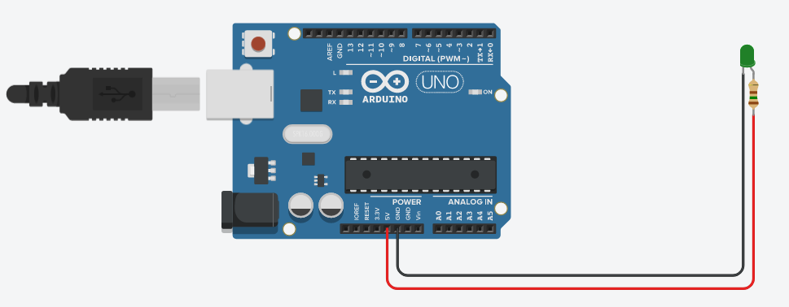
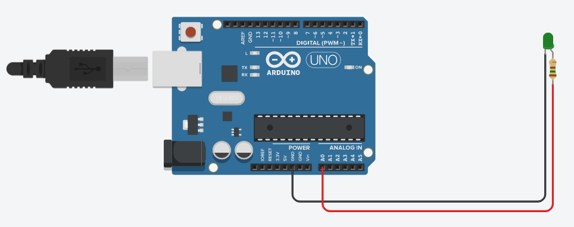
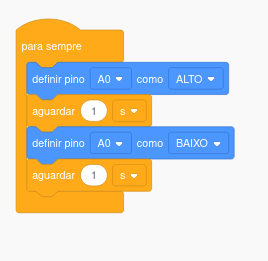
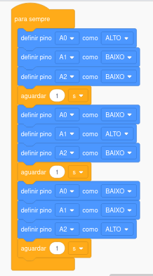

Robótica II
Prof: Marcelo Vieira dos Santos
Prof: Marcelo Vieira dos Santos
Circuito Elétrico
Para se criar um circuito eletrico basta ter uma fonte de energia, nosso
caso um arduino ou pilha e um LED e para finalizar um resistor de 150 Ω, para
chegar a corrente correta e não queimar o LED e simular.

1
Prof: Marcelo Vieira dos Santos
Pisca Pisca
Para montagem de LED acende e apaga, precisa conectar o positivo do LED
em uma porta de informação e programar para ligar e desligar, veja abaixo:

2
Prof: Marcelo Vieira dos Santos
Pisca Pisca
Para programar basta dizer qual porta esta conectado, e quando manda
informação e quando não.

3
Prof: Marcelo Vieira dos Santos
Sinaleiro Semáforo
Para contrução de Sinaleiro Semáforo precisa de três LED um verde,
um amarelo e um vermelho, conectados os respectivos positivos em portas de informação
por exemplo nas porta A0, A1 e A2 como observamos abaixo:

4
Prof: Marcelo Vieira dos Santos
Sinaleiro Semáforo

5
Prof: Marcelo Vieira dos Santos
Robótica II
FIM!!!
6
Prof: Marcelo Vieira dos Santos